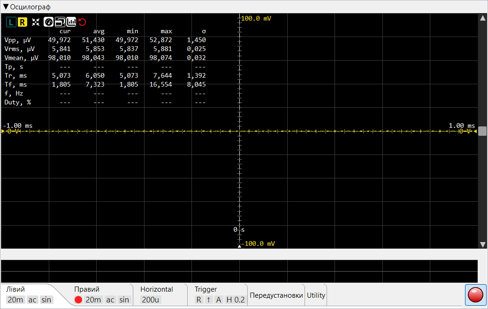

Ця сторінка описує елементи керування осцилографом. Про внутрішній принцип роботи — тригерування, sin x/x реконструкцію між відліками, придушення мережевого фону — читайте у Теорія роботи ▸ Осцилограф.
Відображення сигналу в часовій області в реальному часі. Два незалежних
канали (L / R) використовують спільний тригер; кожен має власні V/div,
зв'язок, інтерполяцію та вертикальний зсув. Показник частоти захоплення
у верхньому правому куті (cap/s) вказує кількість кадрів
на секунду, що відображаються.

L / R
вибирають канал, який керує таблицею
вимірювань та рухомим маркером зсуву каналу — вони не
перемикають вкладки налаштувань. Кнопка неактивна, коли
відповідний канал вимкнено у вкладці
Лівий / Правий.
L / R та Автоналаштування відображаються
завжди; решта з'являються після появи вимірювань
(Кнопки заголовка).0 s); часовий зсув у секундах
показаний над маніпулятором. Див.
Маркер зсуву тригера.Ряд квадратних кнопок у верхньому лівому куті області траси. L / R та Автоналаштування відображаються завжди; решта (індикатор, зовнішнє вікно, перемикач статистики, скидання) з'являються після обчислення вимірювань. Кнопки максимізації тут немає.
Вибір каналу, що керує таблицею вимірювань та маніпулятором зсуву каналу — вони не перемикають вкладки налаштувань. Фон кнопки набуває кольору траси каналу при виборі; L і R незалежні.
Зв'язок із вкладками діє в зворотному напрямку: кнопка заголовка неактивна, коли відповідний канал вимкнено у вкладці Лівий / Правий (вмикач каналу), і знову стає активною, коли канал увімкнено.
Одноразове підлаштування: регулює розгортку так, щоб на екрані вміщувалося приблизно 1,5 періоди, та V/div так, щоб траса займала ~75 % вертикальної області. Використовує виміряний період і Vpp вибраного каналу.
Вмикає та вимикає накладку таблиці вимірювань. Коли прихована, залишаються лише траса та кнопки L / R.
Виносить таблицю вимірювань в окреме службове вікно, яке можна розмістити поруч із головним вікном програми. Відображається лише коли таблиця видима. Закриття службового вікна повертає таблицю до головного вигляду.
Показує / приховує стовпці avg / min / max / σ таблиці
вимірювань. Обчислення тривають незалежно від перемикача; він впливає
лише на відображення.
Червона кнопка зі стрілкою проти годинникової стрілки (скидання
«на початок»). Очищає історію ковзного вікна статистики, що живить
стовпці avg / min / max / σ, — наступний кадр розпочинає
нове вікно усереднення. Корисно після зміни умов вимірювання.
Компактна сітка у верхньому лівому куті області траси. Вісім рядків,
до п'яти стовпців значень (cur + чотири стовпці статистики).
| Рядок | Значення |
|---|---|
| Vpp | Напруга розмах (max − min у межах видимого кадру). |
| Vrms | Середньоквадратична напруга кадру. |
| Vmean | Середнє значення постійного струму — зручно для виявлення зсувів. |
| Tp | Період (секунди), обчислений точно як 1 / f з виміряної нижче частоти. |
| Tr | Час наростання (від 10 % до 90 % Vpp). |
| Tf | Час спаду (від 90 % до 10 %). |
| f | Частота сигналу каналу тригера, виміряна з точністю до суб-відліку; період Tp = 1 / f похідний від неї. |
| Duty | Шпаруватість у % від періоду — тривалість високого рівня / період. |
Ковзна статистика за вікном, що налаштовується (див. Параметри → Осцилограф → Вікно усереднення вимірювань). σ — це середньоквадратичне відхилення генеральної сукупності. Вікно за замовчуванням ~33 с при 30 кадрах/с; кнопка Скидання очищає статистику.
Горизонтальна лінія маркера, трикутний маніпулятор якої знаходиться на правому краї. Маркер можна переміщувати лише перетягуванням цього маніпулятора вгору або вниз; подвійне клацання по маніпулятору повертає його до вертикального центру. Поточний рівень тригера (у вольтах, для активного каналу тригера) показаний поруч із маніпулятором. Прихований при завантаженому файлі (статичний сигнал не потребує тригера).
Вертикальна лінія маркера, трикутний маніпулятор якої знаходиться
на нижньому краї. Задає розміщення моменту спрацьовування тригера
у вікні. Переміщуйте лише перетягуванням маніпулятора вліво /
вправо; подвійне клацання повертає його до центру
(0 s). Часовий зсув у секундах показаний над
маніпулятором. Прихований у режимі файлу.
Кожен увімкнений канал має власний маркер вертикального зсуву (пунктирна нульова лінія + трикутний маніпулятор), і обидва маніпулятори знаходяться на ЛІВОМУ краї. Напруга зсуву показана поруч із кожним маніпулятором. Переміщувати можна лише маркер поточно вибраного каналу — маніпулятор іншого каналу затемнено і показано лише для довідки. Перемістіть активний маркер перетягуванням його маніпулятора; подвійне клацання повертає його до центру.
Вертикальна смуга прокрутки праворуч прокручує трасу вгору / вниз (зсув напруги, обидва канали разом). Горизонтальна смуга прокрутки вздовж нижнього краю прокручує вліво / вправо по часовій осі. Кожна смуга прокручує лише одну вісь — масштаб не змінює, — але її повзунок змінює розмір відповідно до видимої частки, тому відстежує масштаб: зміна V/div або t/div збільшує або зменшує повзунок. Клацніть на порожній доріжці для переходу до вказівника або утримуйте кнопку для безперервного переходу до курсора. Для масштабування використовуйте колесо миші над полотном.
Горизонтальна смуга прокрутки з'являється лише при завантаженому аудіофайлі — вона призначена для переміщення по довгому запису вліво / вправо. Під час живого захоплення прокручувати назад нема куди, тому вона прихована.
Смуга вкладок налаштувань у нижній частині панелі містить параметри каналів, тригера та утиліт. Вкладки Лівий, Правий, Горизонталь та Тригер відображають ряд плиток під заголовком вкладки з її ключовими значеннями, коли тіло вкладки згорнуто; вкладки Пресети / Утиліти / Зберегти / Завантажити плиток не мають.
Керування лівим каналом. Містить перемикач каналу, селектор V/div, кнопку AC/DC та прапорець Sin/Lin. Таке саме розташування у вкладці Правий.
Квадратний перемикач, що вмикає / вимикає канал. Коли вимкнено, траса не відображається і канал не можна вибрати як джерело тригера.
Вертикальне розділення, у вигляді списку 1-2-5-10 від 1 µV/div до
500 V/div. Колесо / стрілки / клавіші ↑↓ переміщуються по
списку; можна також ввести будь-яке значення (із суфіксом
µV / mV / V) для значення поза
списком. Незалежне для кожного каналу.
Режим AC віднімає поточне середнє постійного струму від відображуваної траси, щоб дрібна складова змінного струму на тлі великого зсуву постійного була видна. Базові вимірювання досі обчислюються на сирих відліках — зміщується лише відображувана траса.
Прапорець для кожного каналу, позначений маленьким зображенням sinc-функції. Коли встановлено, траса відображається з Lanczos sinc-інтерполяцією (коректна смугообмежена реконструкція); коли знято — пряма лінійна інтерполяція між відліками. Помітна різниця виникає лише тоді, коли сусідні точки відліків відстоять принаймні на ~2 пкс на екрані (тобто при значному збільшенні часової осі); ближче вони виглядають однаково, а sinc лише збільшує навантаження на CPU.

Ідентичне розташування до вкладки «Лівий» — перемикач каналу, V/div, AC/DC та Sin/Lin, але для правого каналу.

Горизонтальне розділення, у вигляді списку 1-2-5-10 від 1 µs/div до
1 s/div (ns/div відсутній). Колесо / стрілки / клавіші ↑↓
переміщуються по списку, або введіть будь-яке значення
(µs / ms / s) для значення поза
списком. Центр траси залишається фіксованим при зміні t/div — змінюється
лише ширина видимого вікна.

Пара перемикачів L / R, що вибирають канал для компаратора тригера.
Пара ↑ / ↓. Наростаючий фронт спрацьовує, коли сигнал перетинає рівень тригера знизу вгору; спадаючий — зверху вниз.
A / N / S — Авто, Нормальний, Одиночний.
Активна лише в режимі Одиночний. Натискання зводить тригер для наступного одиночного захоплення.
Прапорець + крокове поле в одиницях поділів (0.0 .. 5.0 з кроком 0.1).
Тригерний гістерезис за типом Шмітта: тригер наростаючого фронту
спрацьовує лише тоді, коли сигнал спочатку опускається нижче
(level − hyst), а потім перетинає
(level + hyst). Це стабілізує тригер на слабкому або
зашумленому сигналі — без гістерезису шум навколо рівня спричиняє
серію хибних спрацьовувань і тремтячу трасу. Поле стає сірим, коли
прапорець знято; значення зберігається при перемиканні.
Прапорець, активний лише коли генератор перебуває у режимі Подвійний тон (затемнений для будь-якої іншої форми сигналу). Коли увімкнено, осцилограф накладає затемнену огинаючу биття |f₁−f₂| двох тонів поверх живої траси, кольором каналу тригера — щоб бачити повільне биття, яке виникає між двома близькими тонами, та стабілізувати на ньому тригер.

Зберігання та відновлення повних налаштувань осцилографа. У полі назви введіть ім'я для поточної конфігурації та натисніть Зберегти — буде збережено всі параметри каналів і тригера (V/div, AC/DC, Sin/Lin, t/div, канал / фронт / режим тригера, вмикач і значення гістерезису). Для відновлення виберіть раніше збережену назву стрілкою праворуч від поля та натисніть Завантажити. Видалити знімає вибраний пресет (після підтвердження).

Відображає панель осцилографа у PNG із вибраною роздільною здатністю та дозволяє зберегти його на диск (або скопіювати). Рендеринг використовує позаекранну копію панелі зі згорнутими вкладками налаштувань (щоб траса домінувала) та у вибраному розмірі — незалежно від видимого вікна.
Відкриває діалог калібрування, що виводить повну шкалу напруги ADC з відомого опорного сигналу (каліброваного джерела або прецизійного генератора) і зберігає її в параметрах. Недоступно до запуску захоплення.

Записує останнє захоплення в аудіофайл. Поле тривалості (одне введення у секундах) задає обсяг для збереження; кнопка вибору файлу визначає призначення; кнопка Зберегти записує файл.

Відтворює аудіофайл як джерело даних осцилографа замість живого ADC.
Кнопка відкриття аудіо вибирає файл — будь-який
WAV / AIFF / FLAC, не лише файли,
збережені цим осцилографом. Це простий переглядач форми сигналу для
файлу: тригерування та вимірювання для завантаженого сигналу
недоступні, а FFT-аналізатор не обробляє завантажене через
осцилограф аудіо.
Вкладки Лівий, Правий, Горизонталь та Тригер показують ряд дрібних плиток під заголовком вкладки з її ключовими значеннями (інші вкладки плиток не мають). Плитки пасивні та мають підказки, що пояснюють значення; вони залишаються видимими навіть коли тіло вкладки згорнуто.
Плитка-індикатор на вкладці Лівий / Правий, відображається лише коли канал увімкнено (відсутня, коли канал вимкнено).
Вертикальне розділення каналу, скорочена форма (напр. 1m,
500m, 1).
ac або dc — зв'язок каналу.
sin коли sinc-інтерполяція увімкнена, lin
коли вимкнена.
Горизонтальне розділення, скорочена форма — напр. 200u,
1m, 20m.
L або R — який канал наразі використовується
для тригерування.
↑ для наростаючого, ↓ для спадаючого.
A, N або S — Авто, Нормальний, Одиночний.
Відображається лише коли гістерезис увімкнено; число — вікно гістерезису
в поділках (напр. H 2.0). Відсутність цієї плитки
означає, що гістерезис вимкнено.